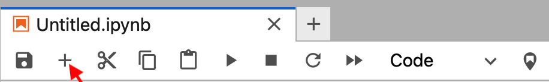

Better scientific writing#
What is \(\LaTeX\) and why is it amazing for engineering students?#
Let me introduce \(\LaTeX\) in a friendly way. Imagine you’re trying to write a beautiful document with complex math equations, but instead of fighting with formatting like you do in Microsoft Word, you’re more like a composer writing a musical score. That’s \(\LaTeX\) (pronounced “Lay-tech” or “Lah-tech”)! It’s a way of writing documents where you focus on the content, and the computer handles making everything look perfect and beautiful. \(\LaTeX\) was created by computer scientist Donald Knuth because he was frustrated with how mathematical texts looked in regular word processors. Today, it’s the go-to choice for scientists, engineers, and mathematicians worldwide. While it might seem a bit different at first (kind of like learning to ride a bike), once you get the hang of it, you’ll wonder how you ever lived without it. Now, you may well say that you arn’t typing documents yet so a little later I also explain why it is far superior than merely submitting handwritten explanations in your exams.
But for now, let’s get started with some basic \(\LaTeX\) commands.
Gentle Introduction to basic Commands#
Instead of clicking buttons to make text bold or italicize a heading, you write simple
commands like \textbf{I love spacecraft dynamics} or \textit{My Project}, and
\(\LaTeX\) takes care of making it look great. To be clear, the commands in the previous
sentence are \textbf{} and \textit{}; whatever you put within the curly braces
will be made bold or italicized, respectively. When making use of these commands in
an ipynb file, you should put dollar signs $ around all of this \(\LaTeX\) content.
So, a more complete example of commands in an ipynb file would be $ \textbf{I love spacecraft dynamics} $ and
$ \textit{My Project} $ and the results look like this:
\(\textbf{I love spacecraft dynamics}\)
\(\textit{My Project}\).
Why don’t you give it a go by creating a new markdown cell in a new .ipynb file and using
these commands. Stepwise instructions of how to do this are given below.
Steps to Create \(\LaTeX\) content in JupyterLab#
Important
You can skip to step 4 if you’re already familiar with how to create a markdown cell in JupyterLab.
Login to JupyterLab, which QMUL provides here.
Create a New Notebook
In the Launcher, click on the “Python 3” icon under “Notebook”. This creates a new
.ipynbfile.Alternatively, you can click on the “File” button in the top left to create a new
.ipynbfile and select “Python 3” from the dropdown menu.
Add a Markdown Cell
Click the “+” button to add a new cell if needed (you might need to look around as the screen is crowded with buttons). The image below has a red arrow pointing to the “+” button, for reference. 
On the far right of this image, you can see the word “Code” in the toolbar; this tells us what type of cell we currently have. Click on the word “Code” and select “Markdown” using the dropdown menu in the toolbar.
Enter Content
Copy and paste this title and introduction:
# LaTeX Equations Examples This notebook demonstrates how to write LaTeX equations in Jupyter. LaTeX is perfect for writing complex mathematical formulas clearly and professionally.
Run the Cell
Click the “Run” button (play icon) in the toolbar
Or use the keyboard shortcut
Shift + EnterThe markdown will render, showing your beautifully formatted equations
Greek Letters
Writing Greek letters is far easier with \(\LaTeX\) and we have some that often appear in
spacecraft dynamics. For example, we frequently use \(\mu\), which is the Greek letter
pronounced “mew”, for the standard gravitational parameter. In \(\LaTeX\), this is
written using the command $\mu$. Similarly, \(\alpha\) is the Greek letter pronounced
“alpha”, and can be written as $\alpha$.
Activity
Try to experiment with the \(\LaTeX\) commands we saw earlier named \textbf{} and \textit{} by making some of the text in the markdown cell above bold or italicized. Can you also write a sentence with \(\mu\) and \(\alpha\) rendered as Greek letters? For example, you can write “The standard gravitational parameter is \(\mu\).”
Next, we will learn to add some equations to our document.
Writing Equations with \(\LaTeX\)#
As an engineer, you’ll eventually write lots of technical documents with complex mathematical equations and figures. While Microsoft Word feels familiar, LaTeX is a much better choice for equation writing for several key reasons:
Perfect Mathematical Equations: LaTeX renders beautiful, professional-grade equations that are consistent throughout your document. No more fighting with Word’s equation editor!
Automatic Formatting: Once you set up your document style, LaTeX handles all the formatting consistently - no more manually fixing spacing or numbering.
Superior Reference Management: Citations, equations, figures, and sections are automatically numbered and cross-referenced, making it easy to update large documents.
Industry Standard: LaTeX is widely used in scientific and engineering publications, making it a valuable skill for your career.
Free and Platform Independent: Unlike Word, LaTeX is free and works identically across Windows, Mac, and Linux.
Examples of writing \(\LaTeX\) equations in ipynb files#
Broadly speaking, there are two types of equations in \(\LaTeX\):
Inline Equations: This is when an equation appears as part of the same line as some words in a sentence. For example, the following sentence contains an inline equation: Einstein’s famous equation \(E=mc^2\) shows us how to write a sentence with an inline equation while also adding a superscript.
Activity
You can write this by inserting the following into a markdown cell:
Einstein's famous equation $E=mc^2$ shows us how to write a sentence with an inline equation while also adding a superscript.
Displayed Equations: This is when an equation is written on a line by itself, like in a math journal article. For example, the equation for integrating by parts is written below in its own line as:
and the command for writing this sentence in a markdown cell makes use of
$$...$$ and not $...$. The complete example for this sentence is:
Activity
The above sentence with the displayed equation is written in a markdown cell as:
For example, the equation for [integrating by parts](https://en.wikipedia.org/wiki/Integration_by_parts) is written below in its own line as:
$$
\int u \frac{dv}{dx} dx = uv - \int v \frac{du}{dx} dx
$$
and the command for writing this sentence in a markdown cell makes use of
`$$...$$` and not `$...$`.
Do you notice the difference between the inline equation and the displayed equation? What happens if you do not remove the empty line between the sentence and the
$$signs? Sometimes, you may see the displayed equation rendered incorrectly if you do remove the empty line.Can you see where the command for writing fractions are? Can you write the equation to the orbit using this? Recall that the equation to the orbit is given by:
Tips for Success
Single dollar signs
$...$are for inline equations (within text)Double dollar signs
$$...$$are for displayed equations.If your equation doesn’t render correctly, check for missing brackets or dollar signs.
Writing Scalars, Vectors and Matrices in \(\LaTeX\) for Spacecraft Dynamics#
Scalars
We write scalars in regular text, like \(m\) for mass and \(g\) for gravity.
The command for writing this in \(\LaTeX\) is $m$ and $g$.
Vectors
We write vectors in bold, like \(\mathbf{F}\) for force and \(\mathbf{r}\) for position.
The command for writing this in LaTeX is $\mathbf{F}$ and $\mathbf{r}$. Note that we use
\mathbf{} to write bold letters for equations and \textbf{}; the latter is used in sentences.
Tip
Unit vectors are written with a little hat, like \(\hat{\mathbf{e}}_x\) for the unit vector
in the x-direction. The command for writing this in \(\LaTeX\) is $\hat{\mathbf{e}}_x$.
Activity
Can you write the unit vectors for the polar coordinate system using \(\LaTeX\), which are \(\hat{\mathbf{e}}_r\) and \(\hat{\mathbf{e}}_\theta\)?
Matrices
Aside from writing simple scalar equations, we frequently need to write matrices such as the direction cosine matrix (DCM). Below is an example of a DCM resulting from a rotation about the z-axis.
The Direction Cosine Matrix (DCM) for rotation about the z-axis (as shown in your image) is written as:
and the command for writing is given below, which makes use of the \begin{bmatrix}
and \end{bmatrix} commands:
A_z(\alpha) = \begin{bmatrix}
\cos(\alpha) & -\sin(\alpha) & 0 \\
\sin(\alpha) & \cos(\alpha) & 0 \\
0 & 0 & 1
\end{bmatrix}
Tips for Matrix Writing
Use
&to separate columnsUse
\\for new rowsDifferent bracket styles:
pmatrixgives ( )bmatrixgives [ ]vmatrixgives | |Vmatrixgives ∥ ∥
Activity
Can you write the DCM for rotation about the x-axis by an angular amount of \(\gamma\) (pronounced gamma) using \(\LaTeX\)? This would look like:
Far far better than handwriting#
Let me also now explain how \(\LaTeX\) helps avoid common handwriting issues/mistakes that can really impact your engineering work but in the short-term impact your grades.
When you’re writing explanations by hand, it’s easy to get sloppy with mathematical notation - and in engineering, this can lead to serious confusion! Think about vectors and scalars, for instance. In handwriting, students often forget or inconsistently use the little arrow or bold notation above vector quantities. One minute you’re writing \(\bf{F}\) for force as a vector, the next it’s just \(F\), and suddenly you’re mixing up scalar and vector quantities without realizing it!
This is where \(\LaTeX\) shines beautifully! In \(\LaTeX\), you have to
explicitly tell it when something is a vector using commands like
\vec{F} or \mathbf{F}, which produces a clear, consistent vector notation
(\(\vec{F}\) or \(\mathbf{F}\), respectively). You can’t accidentally
“forget” the vector notation because the command must be there for it to
appear- this makes a huge difference to me as a teacher as is clear to me
that you, as a student, know what a vector is and when to use it!
This explicit nature of \(\LaTeX\) helps reinforce proper mathematical
notation and, more importantly, proper thinking about what quantities
actually are.
Some other common handwriting issues that \(\LaTeX\) prevents:
Ambiguous Greek letters (is that \(\alpha\) or \(a\) that you wrote by hand- hard for me to tell but typing with \(\LaTeX\) makes it crystal clear!).
Inconsistent vector notation (sometimes with arrows, sometimes without).
Unclear subscripts and superscripts (is that \(x_2\) or \(x_z\)?).
Messy fractions that make denominators and numerators unclear.
Partial derivatives that look like regular d’s.
This precision isn’t just about looking professional- it’s about developing good habits in how you think about and communicate engineering concepts. When you have to explicitly declare whether something is a vector, a scalar, or a matrix, you’re forced to think more carefully about the mathematical nature of what you’re working with!
Closing Comments#
In this page, I have briefly introduced you to the basics of \(\LaTeX\) and how it can be used to explain your thinking in the context of the coursework project and final exam. This will become the stepping stone to write longer documents for your final year project if you choose to work with me on space station design.